Нужна перезагрузка — это интерактивная выставка-мастерская в Петербурге, где молодые люди превращают старые вещи в артефакты с историей. Мы не учим «жить с меньшим» — мы помогаем увидеть больше в том, что уже есть.
Здесь можно принести футболку, телефон или книгу и за 1–2 часа сделать из неё что-то новое: сумку, светильник, арт-объект — с QR- кодом, который расскажет, как это было сделано. Мы верим: каждая вещь может быть важной, если в неё вложить внимание, руки и немного кода.
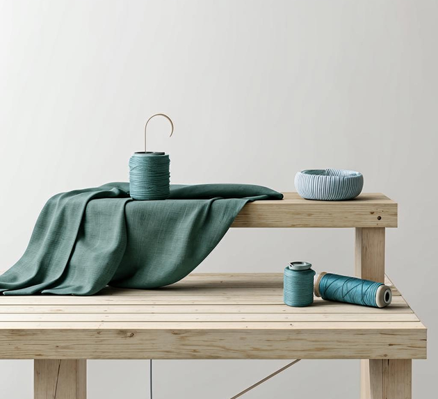
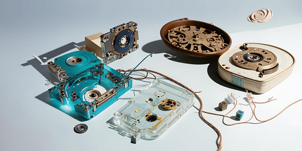
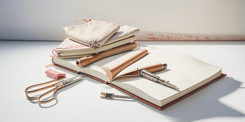
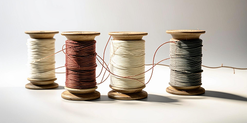
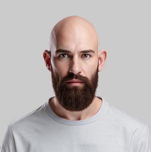
Максим Алексеевич
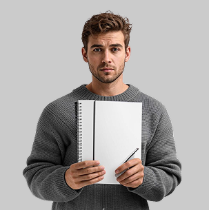
Андрей Александрович
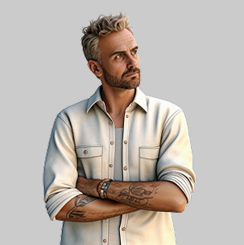
Александр Максимович
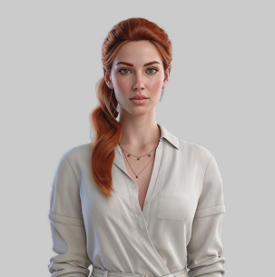
Милана Олеговна
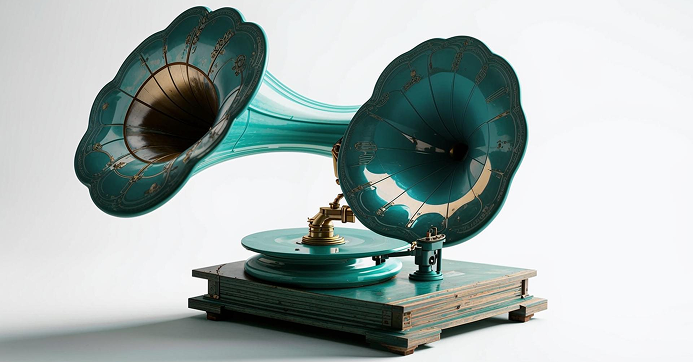
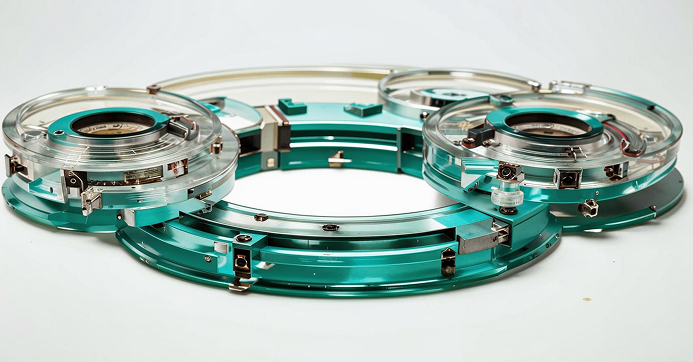
18.12.2026
Инсталляция из 12 старых кассетных магнитофонов,
превращённых в световые скульптуры. Каждая кассета — это голос из прошлого, который мы оживили через движение света и звука.
Вместо ленты — бирюзовая нить, которая колеблется под ритм воспоминаний. Вместо динамика — капля воды, отражающая истории, которые вы расскажете.
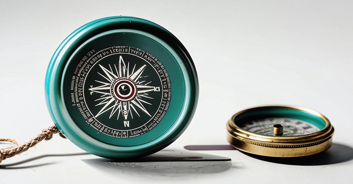
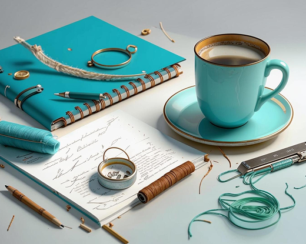
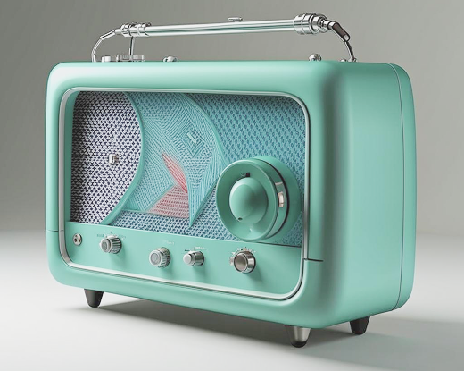
Мы сидели за чашкой кофе в кофейне на углу Куйбышева, обсуждая, как помочь людям увидеть ценность старых вещей. Тогда Милана, наша будущая руководительница мастерских, бросила фразу: «Мы не ремонтируем — мы переосмысливаем»
В тот же вечер, после кофе в кофейне, мы собрались у Миланы дома. Она нарисовала первый эскиз: радиоприёмник, превращённый в световую скульптуру с бирюзовой нитью, которая колеблется под звуки